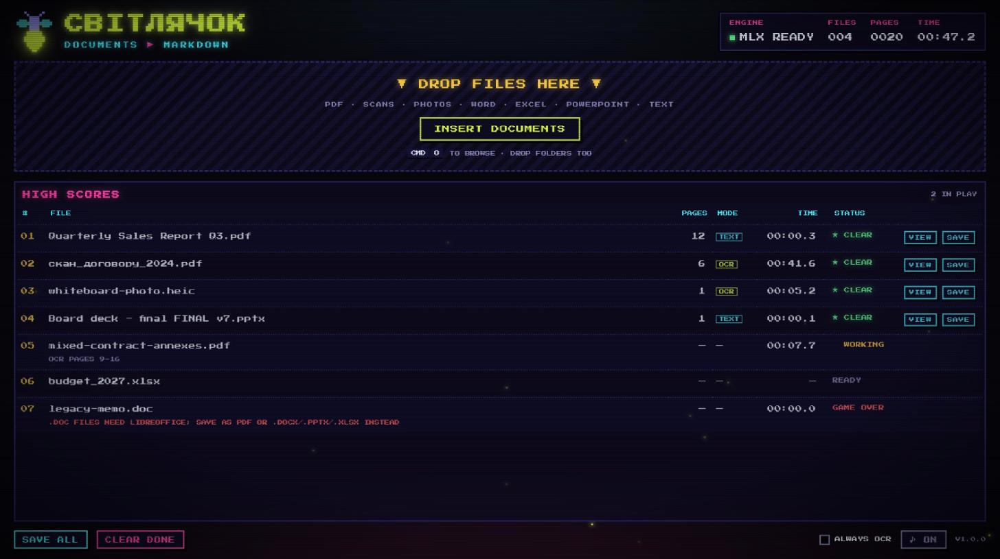

DRAG & DROP
Drop several files, or whole folders, at once. PDF, scans, photos (incl. iPhone HEIC), Word, Excel, PowerPoint, text, CSV, HTML, JSON.
SVITLYACHOK · “FIREFLY”
DROP DOCUMENTS ▶ GET MARKDOWN
Turns PDFs, scans, photos, Word, Excel and PowerPoint files into clean Markdown, right on your computer.
LATEST RELEASE

Drop several files, or whole folders, at once. PDF, scans, photos (incl. iPhone HEIC), Word, Excel, PowerPoint, text, CSV, HTML, JSON.
PDFs exported from Word and the like, plus Office files, are read directly. A 20-page report takes under a second.
Scanned pages and photos are read by Baidu's open Unlimited-OCR model: headings, lists, tables, formulas and figures.
Save one file or everything at once. Figures are saved in an images/ folder next to the .md.
Every file shows its processing time, page count and how it was read (TEXT, OCR or MIX), plus session totals.
Your documents never leave your computer. The only download is the OCR model itself, once.
Mac: open the .dmg and drag Світлячок into Applications.
Windows: run Svitlyachok-Windows-Setup.exe. No administrator rights needed.
The app isn't signed by Apple or Microsoft yet, so the first launch needs one extra click.
Open Світлячок. When macOS says it can't verify the app, click Done, then go to System Settings → Privacy & Security, scroll down and click Open Anyway. You only do this once.
If you see “Windows protected your PC”, click More info, then Run anyway. You only do this once.
Drop files on the window or click INSERT DOCUMENTS. The first scanned page downloads the OCR model (~6 GB, once), with a progress bar. Then click SAVE or SAVE ALL.
| FILE | MAC (APPLE SILICON) | WINDOWS |
|---|---|---|
| Digital PDF, Office, text | < 1 s | < 1 s |
| Scanned page or photo | ~5 s per page | minutes per page |
| OCR engine | MLX on the Mac's GPU | PyTorch on the CPU |
Measured on an M4 Pro. Windows has no GPU engine in this build, so scans are slow there; digital files are just as fast.
No. Everything runs on your computer. The app goes online only to download the OCR model the first time a page needs it (from Hugging Face).
PDF, PNG, JPG, HEIC, TIFF (multi-page), WebP, BMP, GIF, EPUB, XPS, DOCX, PPTX, XLSX, TXT, MD, CSV, TSV, HTML, JSON, XML, YAML. Old .doc/.xls/.ppt files need LibreOffice installed; otherwise save them as PDF or the newer format first.
Digital PDFs are read from their text layer for speed. Tick ALWAYS OCR at the bottom of the window to send every page through the model instead: slower, but it rebuilds formulas (as LaTeX) and borderless tables.
About 0.7 GB for the app on Mac (more on Windows) plus ~6 GB for the OCR model, stored in your user folder's Hugging Face cache.
No, the Mac version needs Apple Silicon (M1 or newer) and macOS 14 or later.
Download the latest version from this page and install it over the old one. The model is kept.